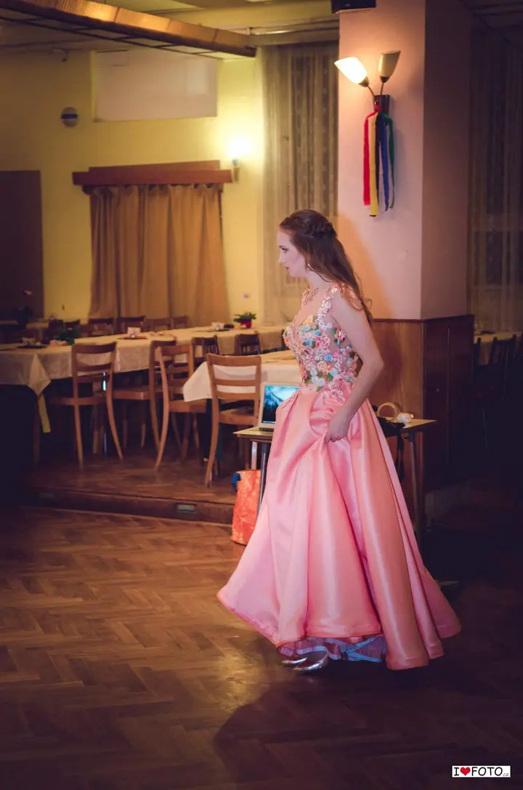
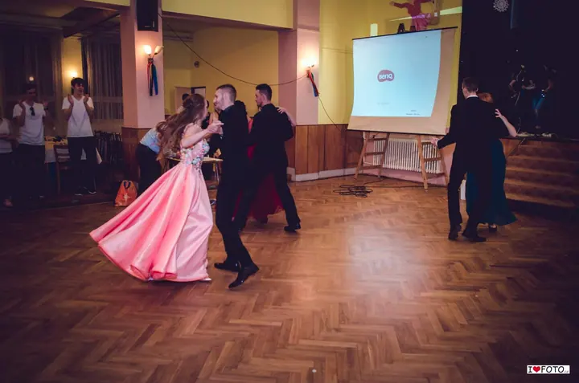
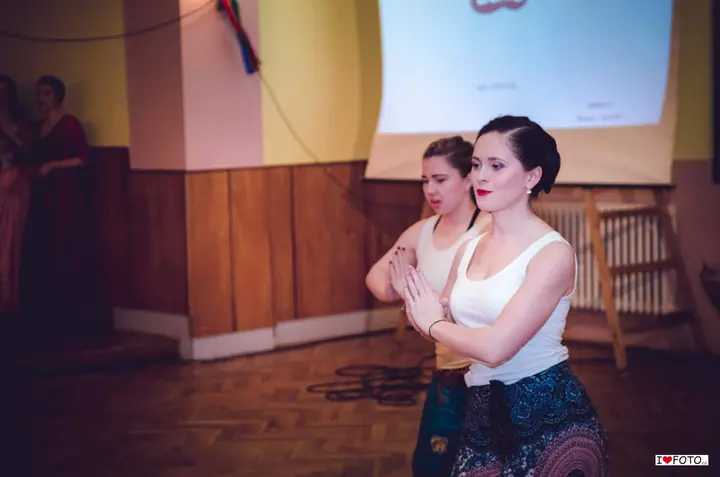

01 / 04
Plesy a události
Fotíme maturitní plesy, školní plesy i firemní akce. Zachytíme předtančení, šerpování i to, co se děje na parketu.
Zeptat se na termín→


Svatby a plesy, kde se tančí
Zeptat se na termín →(01) Ahoj
Jmenujeme se Pavel a Lukas a pod značkou iLoveFoto fotíme hlavně svatby v Česku i v zahraničí. Najdete nás ale i na maturitních plesech a dalších událostech , kam rádi vozíme fotokoutek. Nejvíc nás baví chvíle, kdy se rozproudí parket .
(02) Co fotím
01 / 04
Fotíme maturitní plesy, školní plesy i firemní akce. Zachytíme předtančení, šerpování i to, co se děje na parketu.
Zeptat se na termín→Dále nabízím
Focení svateb se věnujeme nejvíc, v Česku i v zahraničí. Fotili jsme svatby ve Velké Británii, v Paříži, Německu, Vietnamu i na Bali.
↗Na svatbu nebo ples přivezeme fotokoutek, který se vždy postará o spoustu zábavy a jedinečné fotografie.
↗Společné focení před svatbou, při kterém se poznáme a vy si zvyknete na foťák. Hodí se i jen tak, pro vás dva.
↗(04) Postup
Od první zprávy po hotovou galerii.
Krok 1 z 4
Napište nám datum a místo svatby nebo akce. Ozveme se a domluvíme, co si přejete nafotit.
Krok 2 z 4
Před svatbou se můžeme potkat na prewedding focení. Poznáme se a vy si zvyknete na foťák.
Krok 3 z 4
Na svatbě nebo plese jsme po celou domluvenou dobu. Pokud chcete, přivezeme i fotokoutek pro hosty.
Krok 4 z 4
Fotografie pečlivě vybereme a upravíme. Na přání je pro vás i vytiskneme.
Nejlepší fotky vznikají, když se rozproudí parket.
(05) Za objektivem
Focení nás opravdu velmi baví, což asi napoví i název iLoveFoto. Nejvíc se věnujeme svatbám, od Prahy přes Český Krumlov až po Neratov u Rychnova nad Kněžnou.
Svatby jsme fotili i v zahraničí, například ve Velké Británii, v Paříži, Německu, Vietnamu nebo na Bali. V Londýně jsme fotili svatbu i firemní snídani v Carlton Clubu.
Kromě svateb fotíme maturitní plesy, rodiny a portréty a na akce vozíme fotokoutek. Fotky vám umíme i vytisknout a část focení zveřejňujeme na Rajčeti, protože rádi využíváme české kvalitní služby.
Pavel
Pavel a Lukas · Svatební a eventoví fotografové
Ano. Fotili jsme svatby například ve Velké Británii, v Paříži, Německu, Vietnamu nebo na Bali.
Je to koutek, kde se hosté vyfotí sami nebo ve skupince. Na svatbě nebo plese se vždy postará o spoustu zábavy a jedinečné fotky.
Ano, maturitní a školní plesy fotíme pravidelně, třeba v Praze, Náchodě nebo Rychnově nad Kněžnou.
Ano, kromě focení nabízíme i tisk fotografií. Domluvíme se na formátu, který vám bude vyhovovat.
(07) Kontakt
Napište pár vět o tom, co si představujete, a termín, který se vám hodí.